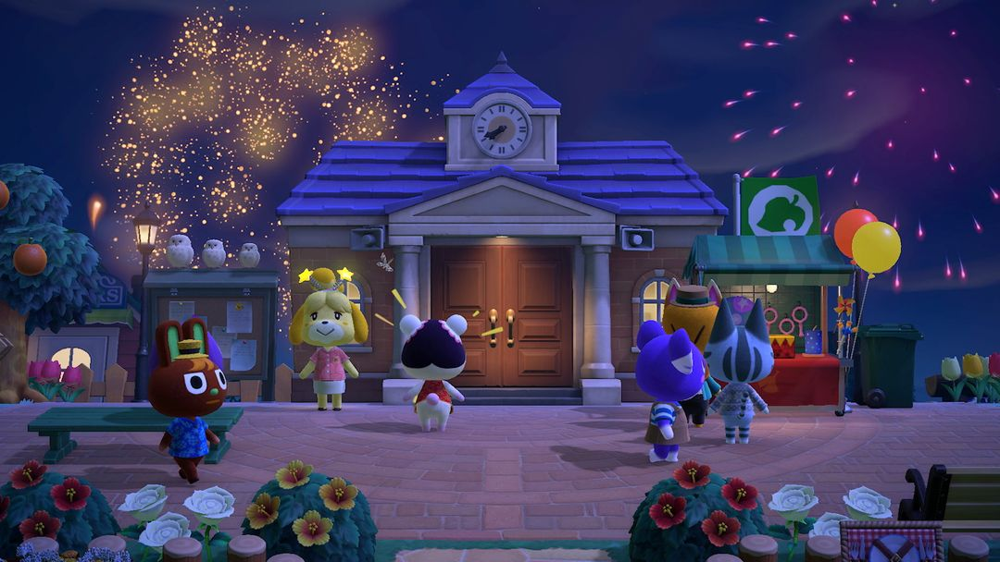
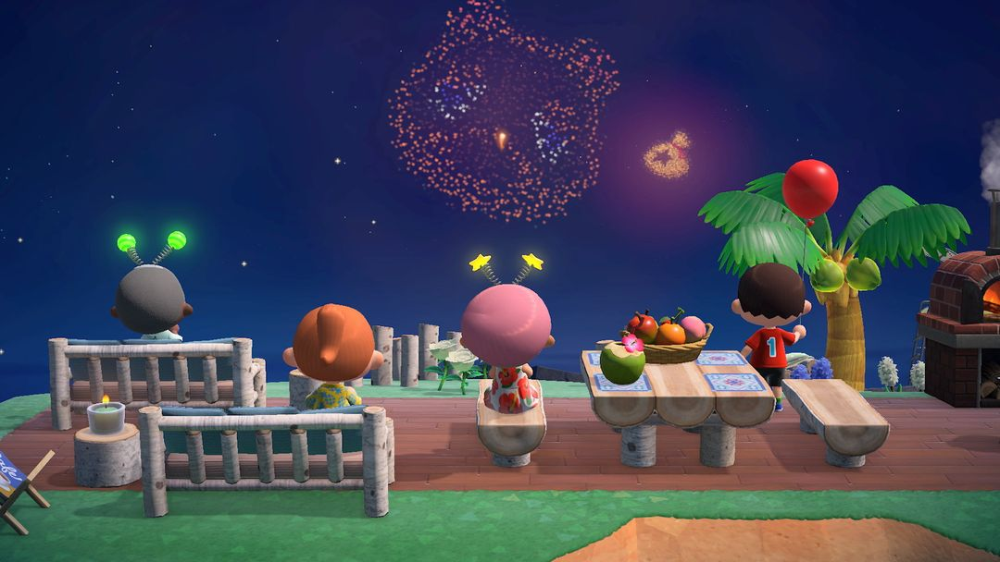
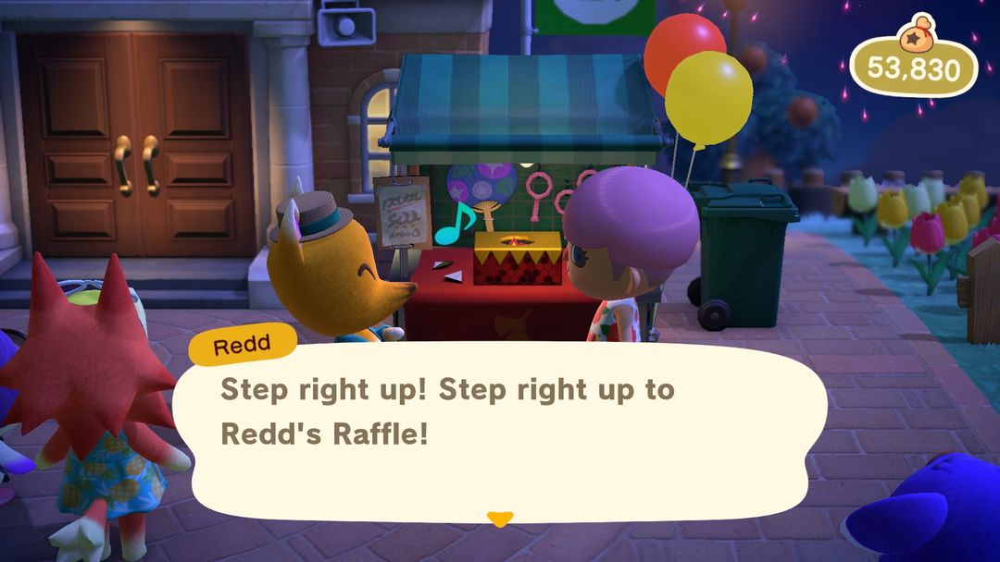
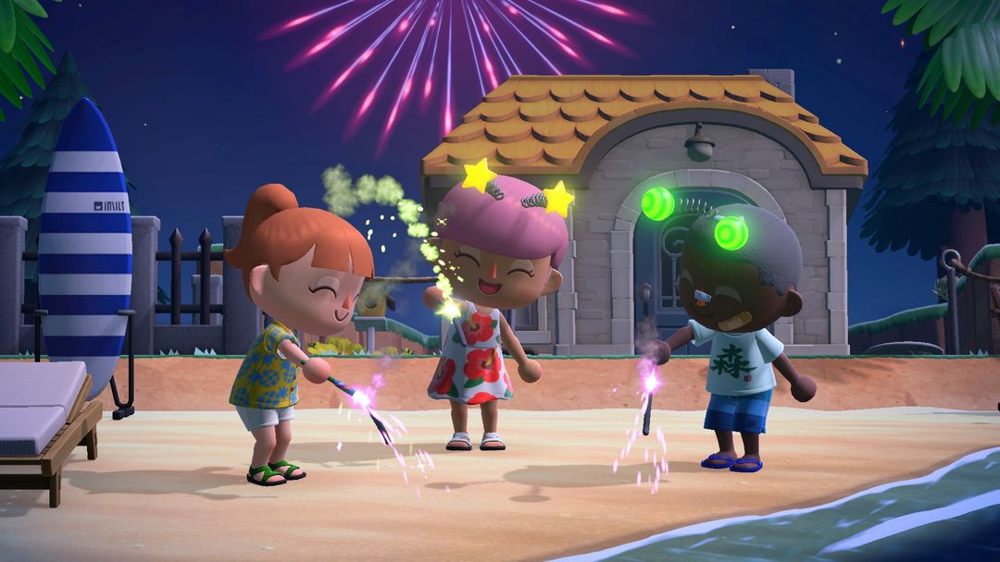

花火大会：8月の毎週日曜日の夜
しずえからひかるアクセサリー、つねきちは福引の屋台。自分で描いた柄も花火になって空へ
8月の毎週日曜日の夜は、島で花火大会が開かれます。この夜は、しずえからひかるアクセサリーをもらったり、つねきちの屋台で福引をしたり、自分で描いた「マイデザイン」を渡して、夜空に花火として打ち上げてもらったりできます。
準備することはあまりありません。しずえからアクセサリーを受け取れるよう、もちものに1枠あけておくこと。それから、つねきちの福引は1回500ベルなので、ベルを少し持っていきましょう。自分の柄の花火を打ち上げたいなら、昼のうちにデザインを描いて、始まる前に渡しておきます。
01開催日
花火大会は毎年8月の毎週日曜日。北半球も南半球も同じ日ですが、南半球ではちょうど冬です。夜7時に打ち上げが始まり、0時に終わります。
1年に4回か5回かは、その年の8月に日曜日が何回あるかで決まります。どの回も内容は同じで、アクセサリー、福引、マイデザインの花火は毎週日曜日にまた楽しめます。今回ほしい景品が当たらなくても、次の回でまた引けます。
当日は昼から準備の様子が見られます。しずえは一日中案内所の前に立っていて、この日は案内所のしずえの窓口はお休み。エイブルシスターズには「きながし」「かぶきなゆかた」「あさがおのゆかた」のうち1着が並びます。ゆかたを着て花火を見たいなら、昼のうちに買っておきましょう。

花火大会の夜、住民たちは案内所の前の広場に集まります（画像：Nookipedia）
02しずえのところで：アクセサリーをもらう・デザインを渡す
花火大会が始まったらしずえに話しかけましょう。ひかるアクセサリーを1つくれます。スター・ハート・はな・ボールの4種類からランダムです。もちものがいっぱいだと受け取れないので、1枠あけて0時までにもう一度話しかけましょう。
自分の柄を花火にする
しずえに話しかけたときに花火のデザインについての選択肢を選ぶと、「マイデザイン」から柄を選んで渡せます。
1回に最大10枚まで渡せて、打ち上げる順番も決められます。あいている枠には普通の花火が入ります。順番は自由なので、いちばん見てほしい1枚を先頭にしたり、何枚かでひと続きの絵になるなら並べて配置して、続けて打ち上がるようにしたりできます。昼に渡しておけば、夜7時の開始と同時に打ち上がります。花火が始まってから渡した場合は、渡したあとに順番に組みこまれます。0時を過ぎると受け付けてもらえません。

渡したデザインは花火になり、普通の花火に混ざって打ち上がります（画像：Nookipedia）
ヒント柄は形がシンプルで色が明るいものを選び、背景を透明にしておくと、空に上がったときに何の絵かわかりやすくなります。よく見たいときは右スティックを上に倒すとカメラが上を向き、夜空全体を画面に収められます。
03つねきちの福引
つねきちは広場に福引の屋台を出していますが、営業は花火大会が始まってから。7時前に話しかけても、まだ準備中と言われるだけです。
1回500ベルで、ハズレはなく、毎回何かしらもらえます。運がいいと、もう1回引くかと聞いてくれることも。もちものがいっぱいだと引けないので、行く前にポケットを整理しておきましょう。
| 種類 | 景品 |
| 花火 | あかいてもちはなび、あおいてもちはなび、おきはなび |
| おもちゃ | シャボンだま、うちわ、かざぐるま、ふきもどし |
| ふうせん | あおい・あかい・きいろの・みどりの・ピンクのふうせん |
| アイスキャンディー | ソーダ・オレンジ・チョコレートアイスキャンディー |
| わたあめ | わたあめ、メロンのわたあめ、ラムネのわたあめ、イチゴのわたあめ |
| タピオカドリンク | タピオカミルクティー、タピオカミルクコーヒー、タピオカいちごミルク、タピオカマンゴーミルク、タピオカまっちゃミルク |
景品は全部で24種類。食べもの、おもちゃ、花火とそろっていて、撮影用の小道具をひとそろい集めたいなら、何回か通ってじっくり引きましょう。

つねきちの福引の屋台は、花火が始まってから開店します（英語版の画面）（画像：Nookipedia）
注意景品はランダムなので、特定のものがほしいなら何回も引くしかありません。ベルは多めに持っていきましょう。10回引けば5000ベルです。
04景品の楽しみ方
てもちはなびは手に持つだけで火花が出ます。何人かで横一列に並んで持つと、写真映えします。
おきはなびは地面に置いて火をつけると、上に向かって火花を噴き出します。撮影スポットの手前に置いて、背景の演出にしましょう。
ふうせんは持ったまま歩き回れますが、転ぶと飛んでいってしまいます。持っているときは転ばないように気をつけて。
アイスキャンディー、わたあめ、タピオカドリンクは手に持つ小道具です。ゆかたに着替えて1本持てば、夏の夜の写真にぴったりです。

てもちはなびを持ち、頭にはしずえからもらったひかるアクセサリー（画像：Nookipedia）
ヒントフレンドの島でも同じ夜に花火大会をやっているので、おたがいに遊びに行って、ほかの人のデザイン花火を見るのもおすすめです。あつ森 サークルのイベントカレンダーでは、8月になると各回が一覧で表示されます。
あつ森 サークル · App Store で「あつ森 サークル」を検索